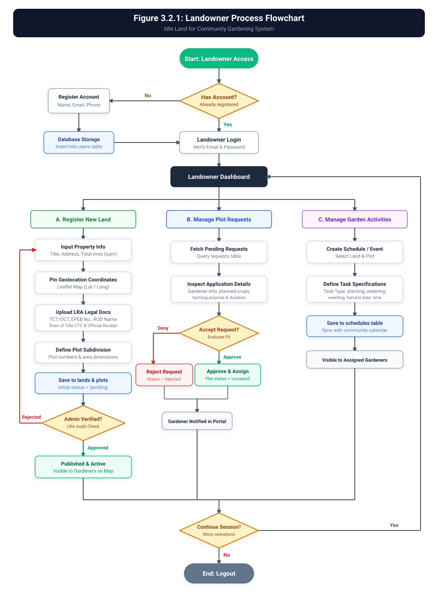
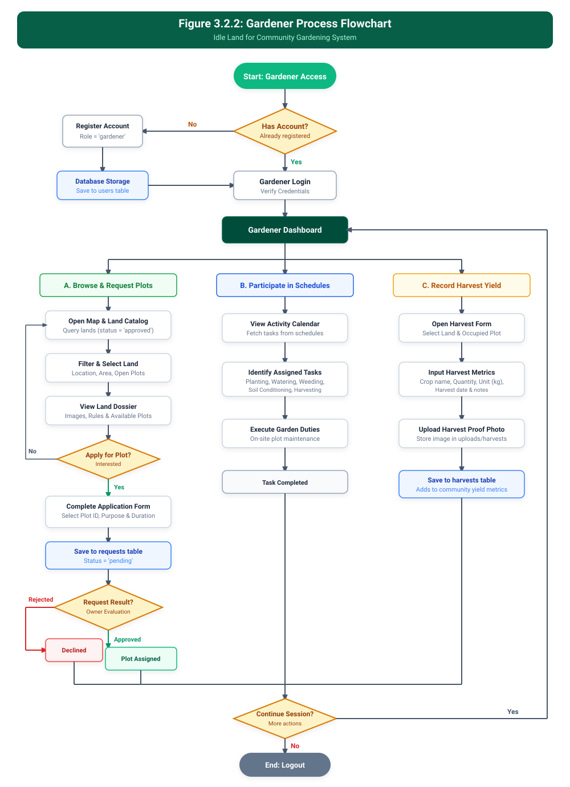
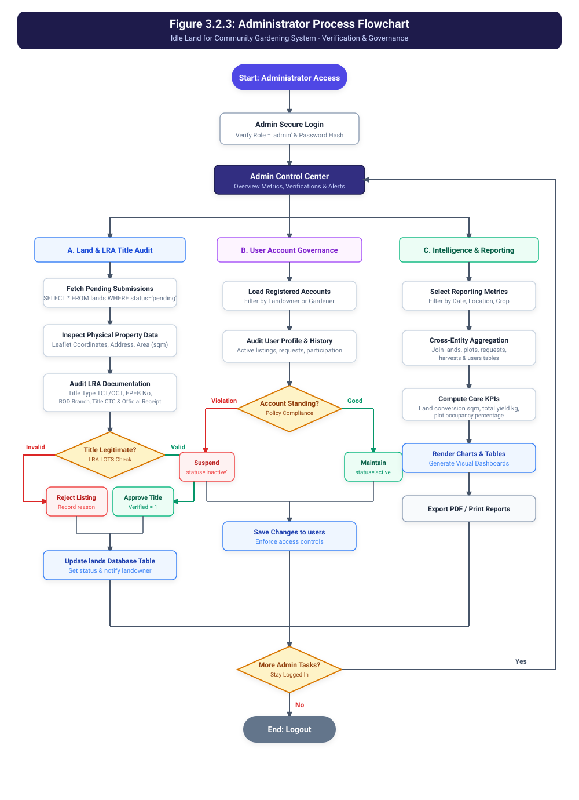

System Process Flow & Data Movement
This documentation chapter details how information and transactional requests travel across the Idle Land for Community Gardening System. It maps how users submit data, how the platform verifies land ownership through Land Registration Authority (LRA) records, how community plots are requested and approved, and how harvests are recorded.
Figure 3.2.1: Landowner Process Flow
Registration, LRA Land Certification, Plot Division, Application Review & Event Scheduling
{kind=link}

1. Land Registration & LRA Audit
Landowners pinpoint coordinates on Leaflet, input parcel area, and attach legal LRA verification documents (TCT/OCT, ROD branch, EPEB transaction no., CTC scans). Submissions start as pending awaiting admin review.
2. Plot Request Review
Once lands are approved, landowners inspect inbound gardener applications, evaluating proposed crop types, durations, and gardener backgrounds before approving or rejecting.
3. Garden Coordination
Landowners organize communal tasks (planting, weeding, watering, harvesting) and broadcast dates to assigned gardeners via the schedules calendar module.
Figure 3.2.2: Gardener Process Flow
Discovery via Leaflet Map, Plot Application, Community Task Schedules & Harvest Recording
{kind=link}

1. Map Search & Plot Application
Gardeners search verified lands via an interactive OpenStreetMap view, inspect vacant sub-plots, and submit targeted proposals specifying crop intent and duration.
2. Task Participation
Gardeners access synced calendar tasks created by the landowner, coordinating maintenance, soil enrichment, and watering sessions.
3. Harvest Documentation
Upon harvesting, gardeners enter crop weight (kg), crop variety, date, and photographic proof into the system to record community yield metrics.
Figure 3.2.3: Administrator Process Flow
LRA Document Audits, User Account Governance & Cross-Table Capstone Reporting
{kind=link}

1. Land Title & LRA Audit
Admin inspects scanned land titles, registry receipts, and cross-references Registry of Deeds and EPEB references. Valid submissions are approved and made active.
2. User Account Moderation
Supervises platform behavior, verifies landowner and gardener accounts, and can suspend or reactivate users in accordance with security policies.
3. Analytics & Reports
Aggregates platform statistics: square meters of idle land utilized, aggregate harvest yields, active community participation, and printable capstone summaries.
{kind=link}
{kind=link}
{kind=link}
{kind=link}
Table 3.2: System Information Movement Matrix
Comprehensive cross-actor data movement mapping showing sources, targets, and database impacts.
| Process Phase | Source Actor | Target Actor | Data Exchanged | Database Target | System State Impact |
|---|---|---|---|---|---|
| Land Registration | Landowner | Admin Queue | Address, Leaflet GPS (lat/long), Area, LRA Title No, EPEB No, Scans | lands, plots, land_images | Record inserted with status = 'pending' |
| Title Verification | Administrator | Landowner / Public | Verification determination (Approved/Rejected) & review notes | lands | is_lra_verified = 1; parcel published for discovery |
| Plot Application | Gardener | Landowner | Plot ID, proposed crops, requested duration, farming purpose | requests | Application queued with status = 'pending' |
| Plot Allocation | Landowner | Gardener | Decision note & confirmation of plot assignment | requests, plots | requests.status = 'approved', plots.status = 'occupied' |
| Task Scheduling | Landowner | Assigned Gardeners | Task type, description, start and end timestamps | schedules | Event populated on calendar dashboard |
| Harvest Logging | Gardener | System Metrics | Crop name, yield volume (kg), date, uploaded proof photo | harvests | Yield logged into agricultural productivity database |
| Reporting Engine | Database | Administrator | Calculated KPIs, land utilization %, harvest totals | Cross-table SQL Joins | Generates analytical charts and exportable reports |